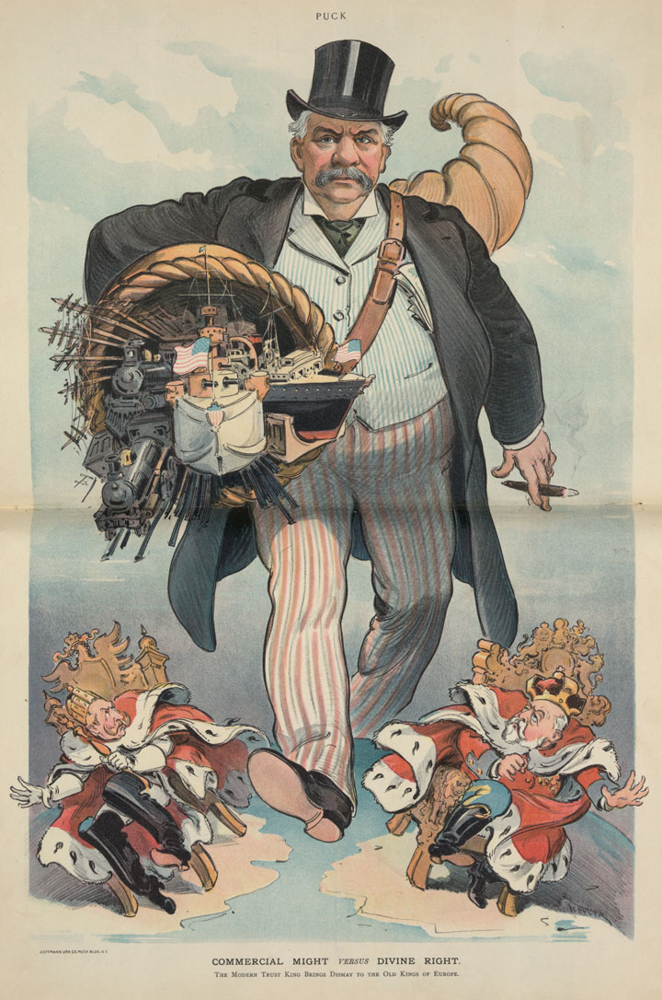
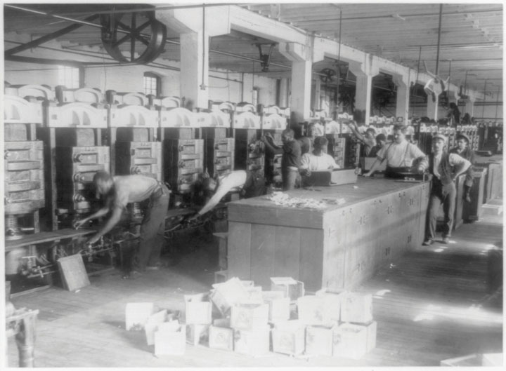
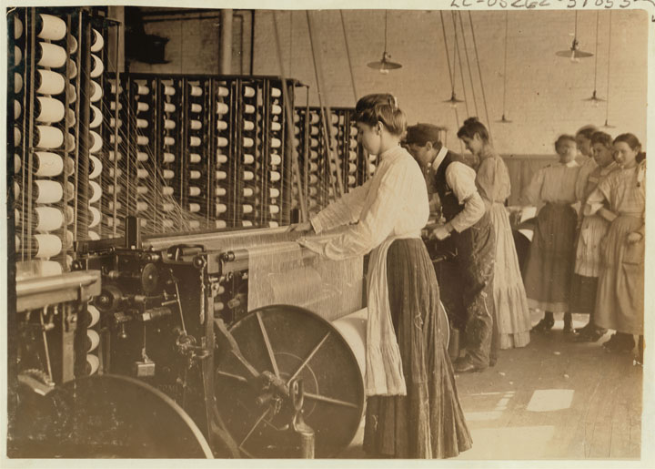
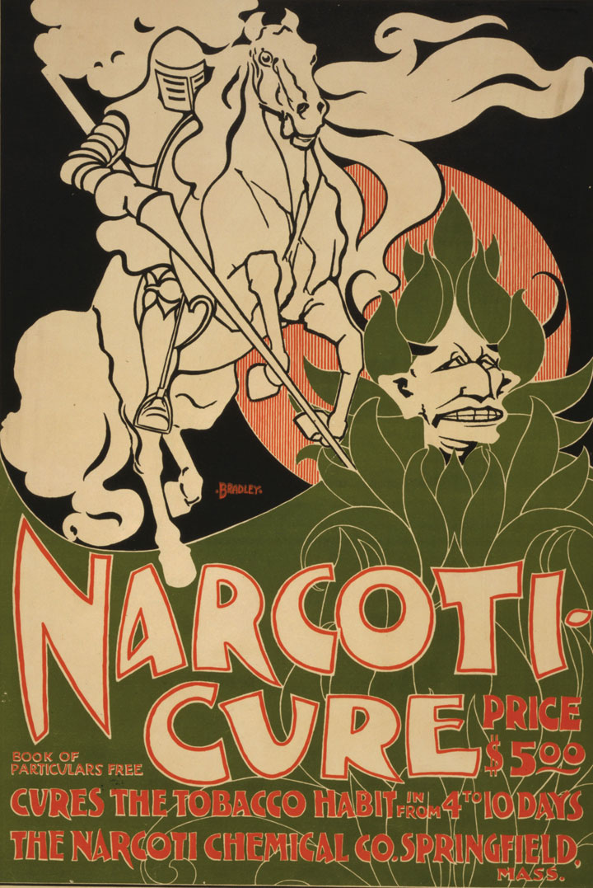
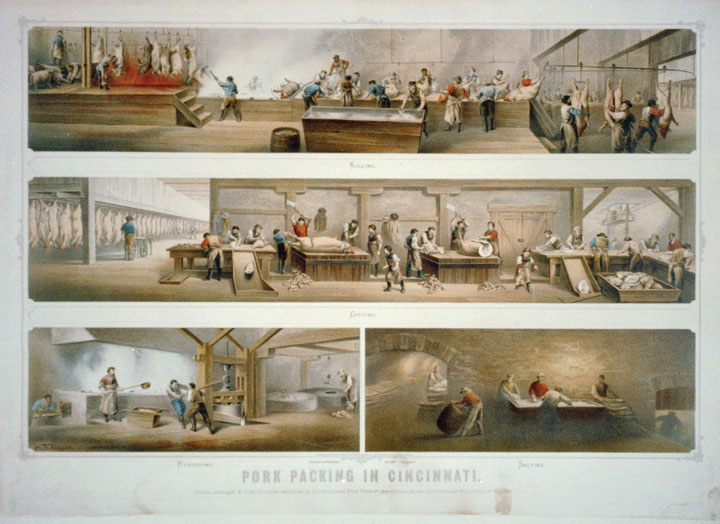

In July 1873, a group of outlaws loosened a piece of track leading to the derailment of a train near Council Bluffs, Iowa. Jesse and Frank James joined other former Confederate bushwhackers as they removed $2,000 from the train’s safe. It was the first of many notorious train robberies conducted by the James gang and similar outfits. Across the plains in Wyoming, the legendary African American cowboy Nat Love explained why many Westerners seemed to be cheering on these outlaws as if they were some sort of modern-day Robin Hood. “If they were robbers,” Love explained, “by what name are we to call some of the great trusts, corporations and brokers, who have for years been robbing the people of this country?” Perhaps exaggerating the charity of the James brothers, Love argued that they had stolen “from the rich and gave to the poor, while these respected members of society steal from the poor to make the rich richer.”
The story of post–Civil War industrial growth is similar to the development of the West and comes with its own outlaws and pioneers. It is a narrative of rugged individualism aided by government intervention on behalf of industrial development. This development in turn was something that most Americans believed was fuel that kept the engines of progress turning. The story of industrial growth is also a narrative of victimization and agency on the part of those who populated America’s great cities on the eve of the Second Industrial RevolutionA period from the end of the Civil War to the outbreak of World War I that was host to a significant transformation of US industry. Innovations in steel production, the assembly line, and inventions such as the internal combustion engine and the ability to harness the power of electricity were key to the transformation. Equally important was the development of the nation’s financial system that facilitated investment and permitted the growth of corporations.. Like many Native Americans, workers fought to preserve the traditions of their artisan ancestors and argued that all development was not necessarily progress. And just as Western development depended on the railroads built with federal support, the growth of industry was only made possible by the loosening of laws regarding incorporation, federal support of railroads and canals, government contracts, and the use of federal and state troops to force striking laborers back to work.
Incorporation permitted entrepreneurs to enjoy the same profit and control of their business as they would under a sole proprietorship but limited their financial and legal liabilities if their business lost money or harmed others. Unlike a sole proprietorship whose failure could result in the loss of one’s own home or even jail time, the owners of corporations could take risks without fearing the loss of anything more than the time and money they had put into the business. Defenders of corporations pointed out that these protections were the only way entrepreneurs could find investors and managers with the skills and resources needed to start new industries. Without such laws, few of the companies that fueled industrial growth and created jobs would have developed as quickly.
Corporations also permitted individuals to purchase stock—a certificate granting partial ownership of a company. One of the key benefits of incorporation was that stockholders were not legally liable themselves if a corporation they invested went bankrupt or was sued in court. They could lose everything they invested, but nothing more than they had invested. For other investors, companies needing capital sold bonds—a promise to repay a loan along with an agreed-on percentage of interest each year. The sale of stocks and bonds promised to allow ordinary Americans the ability to share in the profits of corporate America. In practice, however, only a small number of families owned securities until mid- to late twentieth century.
Figure 2.19

Steelworkers in Pittsburgh at the turn of the century.
Like the railroads and Western land speculators, Northern corporations depended on government support and sought to influence public officials in a number of ways. For example, Northern business interests lobbied government officials who agreed to increase tariffsTaxes on imported goods. Many nations use these taxes to raise revenue while “protecting” domestic industries by raising the prices of foreign goods. on a number of manufactured goods. These taxes protected the developing industries of the United States against cheaper steel and textiles from Europe by requiring importers to pay a tax when they brought their wares into the United States. In effect, these tariffs raised the price of foreign goods, which gave American-made products a competitive advantage. In an era without federal income taxes, tariffs joined Western land sales as the primary source of revenue for the federal government. Together, these two sources of income permitted the federal government to completely pay its debts related to the Civil War within a single generation.
Those who supported tariffs pointed to the revenue they generated and the domestic job creation that depended on protecting US factories from foreign competition. However, the Republican majority that passed these tariff increases soon came under fire as Southern Democrats returned to Congress in larger numbers. Raising the taxes on foreign imports had upset Southerners because Europeans retaliated with their own tariffs against the products America exported, like cotton and tobacco. Because most US factories were still located in the North, Southerners and Westerners seldom benefitted from tariffs, which resulted in higher prices for manufactured goods. More importantly, Britain turned toward India and other cotton-producing colonies within its empire that were exempt from the taxes that importers of American cotton were required to pay.
Figure 2.20

A photo showing brokers inside the New York Stock Exchange in 1908. In this image, information about share prices are printed on paper and placed on kiosks. Similar methods were used in the 1880s, but information traveled via the telegraph.
Competing perspectives regarding the tariff remained a cornerstone of US political debate. Soon this debate included policies regarding monetary policy and laws regulating corporations. America followed Britain and other leading nations in adopting the gold standardA monetary system where currency is exchangeable for a fixed amount of gold. in 1873. Prior to this decision, American money had been backed by both silver and gold. Anyone with American currency could redeem dollars for silver or gold at a certain percentage tied to the relative value of those precious metals. In addition, the government agreed to buy back the greenback currency it had issued during the Civil War, a currency that was not backed by anything more than the government’s promise to back these paper bills.
The adoption of the gold standard gave Americans and foreign investors great faith in the value of the money printed by the federal government. However, it also restricted the nation’s currency to the value of the gold held by the federal government. This restriction had upset many Southerners and Westerners because most of the nation’s gold and gold-backed currency was located in the East. Westerners were particularly eager to have the nation’s currency backed by silver because this would increase the value of recently discovered silver deposits in Western locales such as Nevada. In addition, connecting silver to the nation’s currency would benefit Western banks. In 1874, for example, New York and Massachusetts banks held $120 million of gold-backed US currency. Every bank in every state west of Ohio controlled less than half of that amount. The gold standard meant that a Western farmer had to borrow money from middlemen who had access to the money in Eastern banks. As a result, much of the net profit from a successful farm went to satisfy commissions and interest charges. Even worse, a single unsuccessful crop often meant foreclosure and loss of one’s farm to a distant East Coast banker.
Approximately half of those who went to the West to establish farms eventually migrated to one of the Eastern or Midwestern cities. Given the frequency with which Western farmers went bankrupt, Eastern financiers took on significant risks each time they sent money out West. As a result, the high interest rates Western farmers were forced to accept were not simply the result of greedy Eastern bankers. In politics and finance, however, perception is reality. These charges, along with the frequency of foreclosure, led to the creation of an East-West divide. In addition, because the amount of money that was printed was tied to a finite amount of gold rather than the increasing value of real estate and factories, banks were not able to make as many loans as they would have if there had been more money in circulation.
Corporations might have had easier access to Eastern money, but the limits of the money supply likewise resulted in high interest payments that cut into their profits. The public seldom sympathized with bankers and businessmen, however, and each farm foreclosure or factory shutdown widened the gulf of distrust between labor and capital. The federal government did not believe that it was proper to increase the money supply by printing more currency. This philosophy was influenced by the tradition of noninvolvement in the economy, a tradition of hands-off management known as laissez-faireA phrase that roughly translates to “let it be,” laissez-faire refers to a political system that enacts few restrictions on the actions of businesses and maintains low taxes on private property..
Because currency was scarce, its value increased each year—a phenomenon known as deflation. Deflation benefitted banks and those who already controlled large amounts of currency for the simple reason that the money they held increased in value automatically, while the loans they made were repaid with dollars that were worth more than the original dollars the bank had loaned. For those such as farmers who owed money, however, deflation required them to pay back loans in the future with dollars that were worth more than those they had originally received.
The belief that America’s bankers and industrialists were corrupt was evidenced by the rapidity with which a single phrase became the symbol of post-Reconstruction America. Referring to the perception of corporate domination and corruption among government officials, novelist Mark Twain labeled the era the Gilded Age in an 1873 novel. However, Twain’s contemporaries understood that greed and corruption were hardly new. Would-be reformers in the 1870s referenced the practices of banks and railroads to the questionable finance and cronyism that had been used to finance canals and other projects in decades past.
However, the size and scope of modern graft was now conducted on a national scale. In addition, the number of journalists had increased along with literacy rates. The result was that dozens of newspapers were printed in nearly every language and every city, with many of these journalists exposing scandals or at least repeating rumors of corruption. Even the most benign business deals were conducted with increasingly ambitious financing schemes that invited speculation—among both financiers in Wall Street and those who gathered on Main Street to discuss politics. Similar themes regarding suspicion of corporations and financiers would continue long past the Gilded Age. However, for the first time, a significant number of Americans debated and understood the impact of tariffs and monetary policy on their own lives.
The scale of industrial development expanded dramatically following the Civil War as entrepreneurs such as Andrew Carnegie and John D. Rockefeller used the corporate framework to construct empires. These men, along with innovations as simple as barbed wire or as elaborate as the dynamo, each fueled economic growth and changed the landscape of America. Alexander Graham Bell’s telephone revolutionized communications, while Thomas Edison’s pioneering work in the uses of electricity would transform US factories. However, each of these inventions of the 1870s, with the exception of barbed wire, would not drastically alter American life until the turn of the century. In the meantime, the proliferation of the steam engine and other previous inventions accelerated the transformation of work on farms and within factories. In addition, new ways of structuring production, such as the assembly line, reduced the need for skilled laborers by breaking down the work of craftsmen into simple motions that could be taught to any able bodied man, woman, or child.
Figure 2.21

Standard Oil was often presented as an aggressive monopoly in the press. In this image, the company appears as an octopus whose tentacles are wrapped around other industries such as steel and shipping. The beast is also in control of Congress and is reaching for the White House.
America’s industrial output increased 70 percent between the Civil War and 1873, an economic upsurge without precedent in an era of global scarcity. Fueling the rapid growth of US productivity was the labor of a quarter-million immigrants who arrived every year with hopes of finding work in America’s cities. Urban life in America was seldom the long-term goal for these immigrants, most of who hoped to earn money and eventually return to their homelands. For this reason, few immigrants saw any reason to learn English or assimilate into what they viewed, at least initially, as a foreign nation. Even those who considered making America their home usually saw urban life as a temporary way station on their way toward saving money and purchasing a farm somewhere in the nation’s interior.
Standing between the immigrant’s dream of returning home or buying land was the fact that many of these immigrants borrowed money to finance their voyage. Even those who did not enter the nation in debt rarely earned more money than they needed for their daily survival. In this way, many immigrants experienced a state of financial dependency that was not unlike that of the sharecropper. However, the rapid growth of the US economy allowed many of these immigrants the opportunity to eventually escape the cycle of debt that was becoming a permanent feature of the rural South. Unfortunately, low wages and insecurity of employment left most of them trapped in the ethnic enclaves of America’s cities where they worked for wages rather than achieving their dream of financial independence.
Along with the creation of corporate finance and the growing landless population of potential laborers, new innovations in corporate management such as the trust permitted the growth of industrial America. By the end of the Reconstruction, John D. RockefellerThe founder of Standard Oil, John D. Rockefeller revolutionized US industry by organizing a number of nominally independent oil companies into a trust. had run his local competitors out of business and controlled most of the oil refineries in Cleveland. His methods were both ruthless and ingenious, as he made secret deals with suppliers and the railroads that allowed him to lower prices until his competitors agreed to sell their refineries to Rockefeller’s Standard Oil Company. Rockefeller now hoped to expand his holdings to become the largest oil company in the United States. Unfortunately for Rockefeller, hundreds of other oil refineries existed at this time. The gasoline-fueled internal combustion engine was just being developed and would not become widespread until the early 1900s. As a result, the oil business at this time produced mostly lubricants and fuel for heating lamps—products that were relatively easy to create from crude oil. In addition to the large number of simple refineries, Ohio and other states prevented those who owned oil refineries in one locality from buying their competitors or expanding their businesses to other states.
Rockefeller designed a method of sidestepping the law by creating a new form of corporate management/ownership called the trustA group that controls the stock and therefore effectively owns and controls a number of companies. Trusts were established to get around laws intended to prevent monopolies.. Rockefeller’s Standard Oil Trust was simply a group of investors controlled by Rockefeller who bought the stock of various “independent” oil companies in various states. This stock was then held “in trust” for Standard’s stockholders. Although it would have been illegal for Rockefeller or Standard Oil to own all of these oil companies directly, it was not illegal to purchase publicly traded stock. As long as Rockefeller’s trustees owned the majority of shares, they could control the decisions made by each “independent” oil company and reap the majority of the profits. And it was all completely legal.
Rockefeller used the trust and the methods that had permitted him to corner the refinery business in Cleveland to expand his holdings and control of the oil industry. As Standard Oil grew, it became harder for other oil companies to match Rockefeller’s prices because he demanded and received discounts from suppliers and shippers. Rockefeller’s competitors were simply too small to demand similar concessions, and shareholders were all too willing to sell their declining stock to Rockefeller’s trust at higher-than-market prices. By the 1890s, Standard Oil controlled 90 percent of the nation’s oil refineries. Titans within other industries followed suit by creating trusts that soon controlled the stock of many corporations. In addition, many of the trustees who effectively controlled each of these industries sat on dozens of corporate boards and made “gentleman’s agreements” with one another to avoid what they believed would be excessive competition.
Steel production required more investment than the early oil refineries, which in turn required government intervention. Railroad development and federal tariffs barring the importation of steel from more developed industrial nations in Europe permitted US entrepreneurs to create a domestic steel industry. Demand for steel was high throughout the nation as the navy expanded and railroad mileage doubled every decade between the Civil War and 1890. A Scottish immigrant by the name of Andrew CarnegieRose from humble origins to become the leading steel producer in the world, Andrew Carnegie sought to control every aspect of steel production and lower costs by direct ownership of mines, foundries, and railroads. Carnegie became a philanthropist in later life, gifting his enormous fortune to construct libraries, schools, and institutions of higher education. had risen through the ranks of corporate America, his talent and ambition being noticed by every supervisor from his boyhood years in a telegraph office. Some of these men even loaned money to the ambitious Carnegie, which he invested wisely. Using these proceeds as collateral, Carnegie began investing in steel production. Between his modest fortune and his exceptional connections, Carnegie financed the creation of a modern steel mill based on new technologies he had observed in Britain. With domestic financing and international technology, Carnegie was soon able to make better steel for lower prices than his competitors.
Rather than attempt to indirectly purchase and control competing firms, as Rockefeller had done, Carnegie believed the secret to the steel industry was to control every aspect of the steel-making process. Rather than pay suppliers for raw materials and transportation companies for shipping costs, Carnegie sought to purchase his own mines and own a controlling interest in shipping companies and railroads. As a result, Carnegie controlled every aspect of steel production and distributions and could offer his products at better prices than any other manufacturer. While Britain had been the birthplace of the Bessemer process on which Carnegie based his production methods, Carnegie’s US Steel corporation produced more steel than the entire British Empire by the turn of the century. His methods were just as brutal as Rockefeller’s were, but he would later become one of the most beloved men in the nation when he donated most of his personal fortune of $300 million to charitable causes.
Business leaders utilized new ideas from the field of science to study methods of production, as well as develop new technologies. Many began to liken the cutthroat competition of the business world to that of the natural world, a doctrine known as social DarwinismInspired by a loose interpretation of Darwin’s theory of evolution, social Darwinism proposes the theory that the human advancement will be facilitated if those who are not able to effectively compete in society are not artificially assisted, therefore becoming less likely to pass on their inferior traits.. Charles Darwin’s Origin of Species posited that animals, which were better adapted to their environment, were more likely to survive. More importantly, he argued that nature assigned new traits to animals such as longer legs or thicker fur. If these traits aided their survival, Darwin argued, a process of natural selection occurred in which the animals with these traits would thrive while others would perish. Before long, advocates of all kinds of social theories used Darwin’s ideas about animals to justify their preconceived ideas about race, ethnicity, and even the business world.
Although many business leaders (and most defenders of white supremacy) likely never read Darwin’s books, they adopted slogans such as “natural selection” and “survival of the fittest” to sanitize their elimination of rivals as “natural.” Darwin might not agree that the creation of trusts and the often devious methods business leaders employed to eliminate rivals fit his definition of natural selection. He would especially take exception to the bribes and other methods that corporations used to gain government contracts over their rivals—a process that actually reduced competition. If anything, the creation of trusts and other methods designed to reduce competition actually thwarted the evolution of more efficient business methods. At the same time, the emergence of larger corporations that could take advantage of economies of scale fit Darwinian concepts of evolution within the business world. By consuming their less-efficient rivals, those corporations with superior traits were more likely to survive.
Late in his life, Carnegie sought to mitigate some of the problems inherent in this kind of hypercompetitive business mind-set. Carnegie published The Gospel of Wealth in 1889, espousing the idea that the wealthy industrialist had an obligation to care for the less fortunate, including his own workforce. Veterans of Carnegie’s business empire responded to their aging employer’s book with mixed reactions. Some believed that the steel magnate had provided thousands of well-paying jobs and praised Carnegie’s generosity in endowing libraries and charitable projects later in his life. Others argued that Carnegie had been a tyrannical businessman who still accepted many of the evolutionary tenets of social Darwinism. At best he had become paternalistic, they argued, assuming that the wealthy possessed superior intellect and vision, which obligated them to provide for those who were less endowed.
Financiers such as J. Pierpont MorganThe leading financier of the late nineteenth and early twentieth century, J. P. Morgan helped to finance the consolidation of industry and personally negotiated the creation of leading corporations such as General Electric and US Steel. agreed, although Morgan believed the greatest contribution he could make was by ensuring stability in a financial system he and his banking associates increasingly controlled. Morgan, like most of the nation’s wealthy men of the 1870s and 1880s, had avoided service during the Civil War by hiring a substitute to serve in his place after being drafted. He then negotiated a lucrative deal during the war, purchasing and reselling obsolete rifles for a tidy profit. By the 1890s, Morgan controlled the finances of four of the nation’s six largest railroads. Morgan would also finance the purchase of Carnegie’s US Steel, issuing stock to the public at a price significantly higher than the company was worth. At the same time, Morgan demonstrated that the wealthy people could serve the public interest and their own interests at the same time. Morgan used his influence to calm investors during various financial crises, often using his own money to back a system in danger of collapse.
Figure 2.22
An image celebrating the commercial might of the United States marching across the ocean and challenging the “divine right” of European monarchs. J. P. Morgan personifies the triumph of American industry and Capitalism with its cornucopia of railroads, telegraph lines, steamships, and factories. The image plays on the contemporary notion that Europe was still dominated by feudal lords.
Despite the fact that bankers such as J. P. Morgan at times controlled more gold than the federal government, corporations recognized that their fortunes remained dependent on the favorable operation of the political system. The government controlled laws and regulations regarding trade and finance, as well as the money supply itself. In addition, business leaders also recognized the importance of winning government contracts. The vast majority of these contracts, as well as laws and regulations governing corporate behavior, were controlled by state and local governments. These elected officials were notorious for expecting political contributions and exchanging financial support for favorable legislation. Urban politics operated within the patronage system, a label referring to the expectation that government jobs and contracts would be awarded to those who contributed the most to the political party in power. This same tendency was sometimes called the “spoils system.” This label was an abbreviated form of the phrase “to the victor go the spoils.” Under such a system, a victorious mayor would be expected to reward government jobs and contracts, “the spoils of office,” to those who had contributed the most to his campaign.
The shadow of the Civil War lingered throughout the South during and beyond Reconstruction. Many of the region’s railroads, bridges, and factories had been destroyed and were only gradually rebuilt. Major ports like Norfolk and Charleston limped along, while pilots steered around the remains of sunken ships. Both the plantation belt and the up-country remained isolated from the sources of capital that might spur commercial development. Seaports and a handful of cities such as Atlanta, Raleigh, Lexington, and Memphis rebounded more quickly than the interior, and some Southerners even enjoyed a measure of prosperity by the late 1870s. A handful of Southerners even predicted that the destruction of war might lead to sectional rebirth through a more diversified economy. The lesson of the war, they argued, was the fallacy of an economy based only on a few crops, such as cotton, and a political system dominated by wealthy planters. Soon these voices included a group of reformers, investors, and industrialists who called for the creation of a New SouthA progressive vision for the South based on modeling the economic success of the North and West by promoting individual family farms rather than plantations and encouraging the development of industry. modeled on individual family farms and industrial prosperity. By merging the finest traditions of the Old South with the profitability of Northern industry and the egalitarianism and independence of the West, they argued, the former Confederacy might reinvent itself and become the leading region of the United States.
Editor Henry GradyA Georgia editor and promoter of the New South, Grady valued education and hoped to promote a vision for his region based on both industry and agriculture. was among the leading proponents of such a vision. Grady believed that the end of slavery and the decline of the planter aristocracy would permit greater democracy while encouraging immigration and the growth of factories. He also believed the South enjoyed superior advantages of climate, natural resources, and inexpensive labor. He and other New South boosters understood that development was dependent on railroad construction. The South’s rail infrastructure before the Civil War was haphazard. Many Southern railroads had been built to connect leading cotton plantations to ports rather than cities. In addition, Southern tracks had been built by a patchwork of private companies that each set their tracks at different widths. The result was that cars and engines could not run on the same tracks as they journeyed throughout the region.
Under the direction of New South promoters, total rail miles increased 400 percent during the 1870s and 1880s. Equally important, the South reconstructed existing track to accommodate national standards and the same train that ran in Manhattan could now operate in Mobile. By the end of the century, the South became the leading producer of cloth and employed more than 100,000 workers within the textile industry. However, this production came at its own price as many mills were owned and controlled by Northerners who viewed Southern poverty as an opportunity to hire Southern women and children at much lower rates.
Figure 2.23
African Americans at work under white supervision at a tobacco plant in Richmond, Virginia. This photo was part of an international display that meant to show racial harmony.
The iron and steel industry was equally important to the New South and usually provided higher wages. Iron ore was taken directly from Appalachian mines to Southern steel cities such as Birmingham. Much of the wealth created by these factories helped spur the construction of additional factories and industries throughout the South. At the same time, most of the original capital to build these enterprises came from Northerners who would continue to control the industry and usually operated Southern mills in a way designed to enrich their own region. As a result, Grady’s vision was only partly fulfilled.
Cotton, along with other cash crops such as tobacco and rice, remained the core of the Southern economy. The indebtedness of those who produced these crops kept many Southerners desperately poor. Sharecropping expanded throughout the 1870s and 1880s as small farmers fell deeper into debt and were forced to sell their land and work on the farms of others. These others were usually in debt themselves. As a result, they required that hired workers plant cotton—one of the few crops that could reliably be sold for cash each harvest.
By 1890, 40 percent of families in the Deep South were sharecroppers who desperately needed to maximize every acre of land that was available to them if they were to ever escape the cycle of debt. Many sharecroppers turned to fertilizers and used methods that increased short-term yields but depleted the topsoil. Without trees and natural grasses, millions of acres of land had no vegetation at harvest time. Rain and wind finished the process of soil erosion begun by overplanting. Together, this ecologically unsustainable model slowly destroyed the productivity of many Southern farms and deposited silt and fertilizer into Southern rivers.
The poverty of the land and people who lived on it was further exasperated by the crop lien systemA system of credit that was common throughout the South, the crop lien system allowed farmers to finance their operations by using their future crops as collateral for loans. Interest rates for these kinds of loans were high, a fact that prevented most borrowers from prospering even when crop yields were high.. The landowner and the merchant who provisioned the sharecropper were usually in debt themselves. Influenced by merchants, bankers, and landlords, Southern courts established a hierarchy that determined who would get paid first at harvest time. The laborer occupied the lowest rung—being paid only after merchants, mills, banks, brokers, and the landowner were satisfied. As a result, the crop lien system meant that the sharecropper had to assume the risks and finance many aspects of cotton production, even though they were essentially wage laborers. Sharecroppers bought seed and supplies on their own accounts, for which they were legally liable.
Courts defended the practice of charging high interest rates to laborers for items purchased on credit, even though laborers’ wages were withheld during this same period and did not earn interest. Because of these laws, sharecropping transferred much of the risk of running a business on the laborer. In addition, interest rates for laborers ranged “from 24 percent to grand larceny” according to one Southerner. Employees in factories were paid an established amount after each day or week, while the owners of factories were the only ones liable for the loans used to purchase equipment and raw materials. The sharecropper was paid once a season if the crop was successful, and only after satisfying expenses, interest charges, and any other obligations.
Figure 2.24
Women at work at the Mollahan mill in South Carolina. In the past, cotton mills had to be located near sources of running water and were therefore more likely to be located in New England.
The sharecropper was not the only potential victim since many landowners and merchants also lost money. At the root of the problem was the dire economic condition of the South. Without capital or access to the credit required to build factories, Southern elites turned to cotton production at the exact same time that global overproduction lowered cotton prices to one-third of their antebellum levels. While the plight of landlords may pale in comparison to those who worked their fields, many planters were also caught in their own cycle of debt as they borrowed money at high interest rates to produce cotton that kept dropping in price. Planters and merchants enjoyed one tremendous advantage, however, as crop lien laws guaranteed they were paid first when the cotton was sold at market. For this reason, many whites and former slaves who worked the land turned toward their elected representatives in hope of reforming these laws. They also petitioned in favor of public schools and a more progressive tax code. Others hoped their elected representatives would encourage the growth of industries that would provide better job opportunities and an alternative to cotton production.
Tobacco was one of the few growth industries controlled almost exclusively by Southerners. James Duke was the ambitious son of a wealthy tobacco factory owner who may have been the first to fully grasp the potential of marketing within his industry. Americans preferred smoking cigars and pipes, which were considered masculine, especially when compared to the cigarette, which was heavily stigmatized as effeminate. Cigarettes were also associated with despised immigrant groups from central and southern Europe, which further stigmatized their use among most “white” Americans. Duke believed he could change this image. He invested heavily in new machinery that could produce cigarettes faster and cheaper than any other form of tobacco, and sold his products at prices below cost. He also invested heavily in marketing, plastering images of “manly” men enjoying cigarettes that were now readily available and very inexpensive. He even gave free samples to soldiers and “manly” blue-collar workers. As a result, the image of the cigarette was rehabilitated and working-class men adopted the highly addictive product as part of their culture.
Because of his earlier efforts to eliminate competitors, Duke’s American Tobacco Company controlled 90 percent of the tobacco market by the turn of the century. In 1911, Progressives within the federal government ordered the company broken up, not because of well-known health risks, but because they believed Duke had established a monopoly. By this time, Duke had invested in energy and other industries that spurred job construction throughout North Carolina and surrounding communities. He would also donate much of his fortune to various universities in the region. His money might have been better invested in the public schools of the South, as spending per pupil in this region was the lowest in the nation, even before it dropped by 50 percent once the Radical Republicans were purged from office. Fifteen percent of whites could not read, while half of the black population had no public schools open to its members within a child’s walking distance.
In fairness, most Southern states devoted a similar percentage of their total tax revenue to public schools, as did other states. Because taxes on land remained low, there simply was not much revenue for education, and efforts to increase taxes were usually rebuffed by the powerful Democratic Party that represented landowners. It should also be pointed out that school segregation was not limited to the South. Virtually every Northern and Western community with a black, Hispanic, or Asian population above 15 percent also maintained schools that were segregated in one form or another. States as far west as Missouri and as far north as Delaware required separate schools by law. Other states, such as Kansas, permitted segregation as long as there were enough black students to justify the added expense of operating two school systems.
Southern educational boosters were on the defensive following Reconstruction, yet were able to develop over a hundred denominational colleges. States also utilized revenue from federal land sales to create universities that would focus on teaching agricultural science and industrial skills they hoped would boost the commercial fortune of their region. The Virginia legislature set aside an entire quarry of what would soon be known as “Hokie Stone” to create Virginia Polytechnic and State University in the hills of Blacksburg. The first public university in Texas opened its doors in rural Brazos County and was likewise dedicated to “practical” educational fields such as agriculture and mechanics. Black politicians and community leaders also petitioned and secured the creation of dozens of agricultural and technical colleges. Savannah State, North Carolina A & T, and Florida A & M were among those founded during the 1880s and 1890s, despite prejudice and tremendous financial obstacles.
Figure 2.25
Americans recognized that nicotine was addictive and cigarettes were health hazards during the nineteenth century. This turn-of-the-century product promises to cure one’s addiction to nicotine for only five dollars.
Together with white state colleges such as Georgia Tech, North Carolina College of Agriculture and Mechanical Arts (known presently as NC State), and Florida Agricultural College (known today as the University of Florida), the New South embraced the idea that colleges should teach a trade in addition to the liberal arts. These notions of college as a place of vocational training would be criticized by the academy in future generations. However, the idea of college as a place of learning a trade would once again steer the ambitions of college students and administrators by the late twentieth century. Like the late nineteenth century, modern colleges and universities focus more resources toward placing students in specific jobs in business and industry rather than the arts, humanities, and literature.
New South promoters also hoped to encourage foreign immigration to their region. Some boosters even attempted to lure Asian and Hispanic settlers to the region. However, the existence of the crop lien system and the resultant conditions sharecroppers faced discouraged outside immigration. The poverty of the rural South also allowed factories to pay low wages and still attract workers from the hinterlands. Foreign immigration remained negligible in the South at a time when the North and West were attracting millions of new settlers each year. Promoters of the New South wrote thousands of editorials suggesting ways to remedy the imbalance. Many of these editorials blamed the South’s failure to attract its share of “honest labor” from Europe on the presence of “shiftless” nonwhite laborers. Others were more forthright, arguing that native white and foreign laborers would not enter the South because they would receive the same starvation wages that were paid to black workers and sharecroppers of all races.
Because of the Republican Party’s affiliation with the black vote during Reconstruction, white voters remained loyal to the national Democrat Party between Reconstruction and the civil rights movement of the 1960s. However, a wealth of independent candidates and political parties existed on the local level. As a result, the New South was both a political backwater and the birthplace of the largest grassroots third-party movement in US history during the 1890s. In the near term, a diverse lot of unreconstructed Confederates, New South business promoters, gentlemen planters, backwoods populists, and small farmers constituted a Southern Democratic Party that agreed on little else than the need to prevent former slaves from ever voting or holding office again.
Economic growth in the North and South, like the West, was dependent on family labor. Sharecropping forced Southern children to work in cotton fields, but children of all regions were expected to labor on family farms. City life seldom led to an escape from adult work. Nearly one in four urban children held full-time jobs after the Civil War. Immigrants, farmers, and former slaves all shared a reverence for education. At the same time, they faced the crushing reality that the labor of their children was often the difference between starvation and survival. New England mirrored the South in the proportion of urban children who worked in textile mills, while the youth of many children in Appalachia was spent underground in coal mines. Each of these jobs made old women and old men out of their youthful practitioners. Children were estimated to be twice as likely to suffer workplace injuries as their adult coworkers. By 1880, only a half-dozen states had passed laws requiring children to have reached the age of twelve prior to entering the workplace. For some parents, child labor laws threatened to lower the family income to unsustainable levels. As a result, child labor laws were only as effective as parents and factory operators chose to make them.
More than 200,000 immigrants arrived in New York City alone each year following the Civil War, with many more arriving in port cities of the East and West. With the exception of prejudice against Asian immigrants along the West Coast and people of Hispanic descent in the Southwest, assumptions that America’s nonwhites and new arrivals were part of a “lower order” were usually most visible in the cities of the East and Midwest. Despite the diversity of enclaves such as New York, Baltimore, and Philadelphia, the ethnically segregated neighborhoods of these seaports prevented the creation of a multicultural “composite nation” advocated by Frederick Douglass during Reconstruction. Anti-immigrant prejudice was pervasive, as was the use of scapegoats for urban problems. For example, an urban legend placed the blame for the Great Chicago Fire of 1871 at the feet of a careless Irish immigrant and the hooves of her filthy cow.
Although the story of the Chicago Fire had in fact no basis, it spread almost as quickly as the fire itself because it bolstered existing assumptions that the Irish were irresponsible and dangerous. Such xenophobic sentiment was also used to sanitize crime and infant mortality rates. Children born in America’s ethnic enclaves were three to five times more likely to die in their infancy than children born to the wealthy and middle class. That these statistics aroused little alarm in late nineteenth-century America demonstrated that many saw the death of immigrant children as something less than a national tragedy.
Immigrants were also the targets of violence waged by native whites who resented their presence. In the Border South communities of Cincinnati and St. Louis, emancipation and black migration intensified the ethnic and racial prejudices of white residents. From the perspective of these whites, it seemed that each day, some black workers were “imported” into the city so that a company could replace a white worker for lower wages. River ports from Cincinnati to Pittsburgh experienced decline in traffic during the 1870s and 1880s as railroads replaced riverboats. That this occurred at the same moment former slaves and immigrants arrived in river cities looking for work led to increased racial tension throughout the Ohio River Valley. As a result, both groups were often the scapegoats for a decline in industries that began long before they arrived.
Figure 2.26
Cincinnati was once one of the largest cities in America due to its location on the Ohio River. This 1873 image shows scenes from one of the many pork-processing plants in a neighborhood referred to as Pigtown.
The potential for conflict between African Americans and white workers was especially pronounced in port cities in former slaveholding states beyond the Deep South, such as Delaware and Maryland. White Baltimore workers demanded that companies stop hiring blacks in the shipping trades during the 1870s. Although black men dominated several antebellum trades along the waterfront, such as caulkers, many unemployed whites moved to cities like Baltimore and demanded that black men in these fields be fired to provide more jobs for white Americans. Black men in Baltimore fought to maintain their jobs but were eventually forced out by white employers. One group of black men responded by forming the Chesapeake Marine Railway and Dry Dock Company, a black-owned and controlled shipbuilding company that was formed in the immediate aftermath of the Civil War. These men ran very successful businesses in the city’s Inner Harbor for two decades.
However, racism limited the ability of this company’s officers to obtain loans needed to modernize their facilities. As a result, the company could not afford the needed improvements to work on steel-hulled ships that dominated the industry by the end of the century. For most African Americans in and beyond the Baltimore harbor, the fact whites controlled most industries and only considered black women as domestics and black men for the worst and lowest-paying jobs was the worst aspect of the color line. The same was true of numerous immigrant groups. Some who saw few other options turned away from legitimate work and turned to a subeconomy that featured petty theft, gambling, prostitution, and crime. These shadow communities grew in every American city and eschewed traditional mores and values while also violating racial lines. The alleyways and taverns of these urban environments were home to both interracial cohabitation and conflict, making the inner cities the first racially integrated communities in America. These were no racial utopias, however, as black-white and ethnic-religious conflicts in each of these neighborhoods frequently descended into violence.